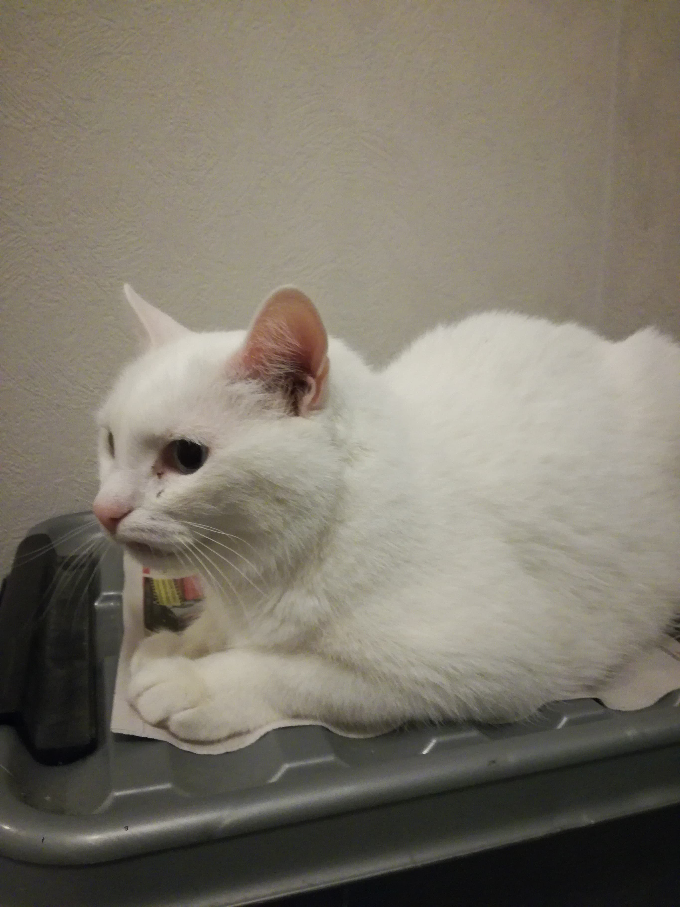

Having start code laying ready and prepared that was modified by
yourself (and your group)
makes it very easy to understand what's
going on and getting started with a project.
I personally had a problem with deployment (on my server) that was
of great annoyance,
but ultimately it was entirely caused by a
wrongly written password and has been solved now so that it won't be
repeated in the future.
Once again practising setting up the pipeline, deploying on Surge
and making everything work was a good refresher too.
In accordance with my front end
below is a picture of my sister's and brother-in-law's white Angora:
